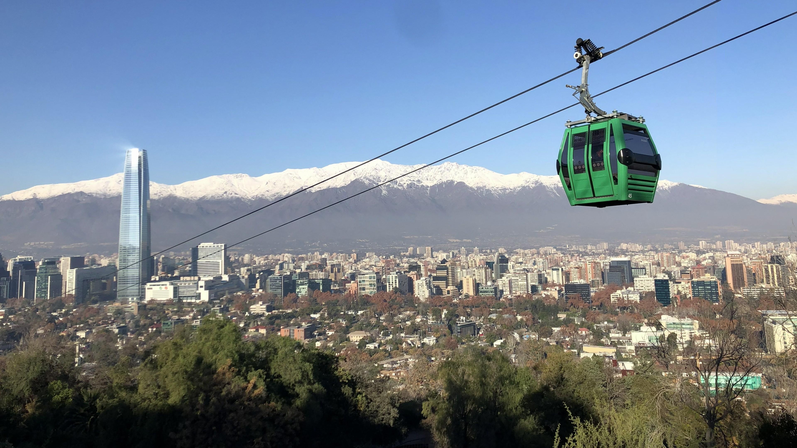

Judea después de Herodes: las alternativas de Augusto en el año 4 a. C.
Un análisis contrafactual de las alternativas de administración romana para Judea tras la muerte de Herodes el Grande.
Leer ensayo (en inglés)Soy Mitchell Langley, geógrafo y profesional de la planificación del transporte, con experiencia en infraestructura y asuntos regulatorios. Regresé a Estados Unidos tras concluir mi trabajo de asesoría en Chile y me entusiasma seguir trabajando en la intersección del transporte, el uso de suelo, el derecho y las finanzas, desde la formulación de proyectos hasta su implementación.

Mi trabajo de consultoría abarcó transporte, energía y telecomunicaciones para más de 15 clientes en el Cono Sur. Elaboré modelos financieros para inversiones en flotas y terminales, revisé riesgos de emplazamiento y permisos para proyectos de transporte y energía, negocié precios contractuales de servicios y provisión de activos, preparé ofertas para licitaciones públicas y postulaciones a financiamiento, y desarrollé herramientas de análisis para operadores y organismos públicos.
En la División de Transporte Público Regional analicé las finanzas y la operación de los servicios, preparé documentos de licitación y normas regulatorias, y coordiné su implementación con organismos públicos, municipios y operadores. Como coordinador, supervisé una cartera de más de 15 concesionarios de transporte público en cuatro regiones.
Me dediqué a la planificación multimodal del transporte y a la gestión de proyectos de inversión en transporte público. Desarrollé modelos de tráfico e ingresos para proyectos en el área metropolitana de Washington, D. C. También trabajé en modelación de tráfico y semáforos, informes de enlaces viales para revisión federal y coordinación de aspectos técnicos, contractuales y de programación entre equipos multidisciplinarios.
George Washington University
Concentración en planificación urbana y regional, con cursos en transporte, uso de suelo y sistemas de información geográfica.
Universidad Adolfo Ibáñez
Programa interdisciplinario centrado en derecho regulatorio, economía y políticas públicas.
Un análisis contrafactual de las alternativas de administración romana para Judea tras la muerte de Herodes el Grande.
Leer ensayo (en inglés)La teoría organizacional de Karl Weick como punto de partida para examinar la coordinación, los silos burocráticos y el control institucional en la serie.
Leer ensayo (en inglés)
Fotografías de la ciudad entre 2017 y 2026: sus vistas, su vida cotidiana y las diferencias entre sus barrios.
Textos en español e inglés.

Doce fotografías de Chile, de norte a sur, acompañadas por el himno nacional y una traducción poética al inglés.
Textos en español e inglés.
La historia del Metro de Washington vista a través de sus instituciones, decisiones de planificación, financiamiento y aspiraciones de desarrollo urbano.
Una referencia para comprender las diferencias entre el common law y la tradición jurídica continental, presentes en mi experiencia entre Estados Unidos y Chile.
La forma actual de Santiago como resultado de siglos de cambios sociales, políticos y económicos, y su relación con el uso de suelo y el transporte.
Los títulos enlazan a mis notas de lectura en inglés.